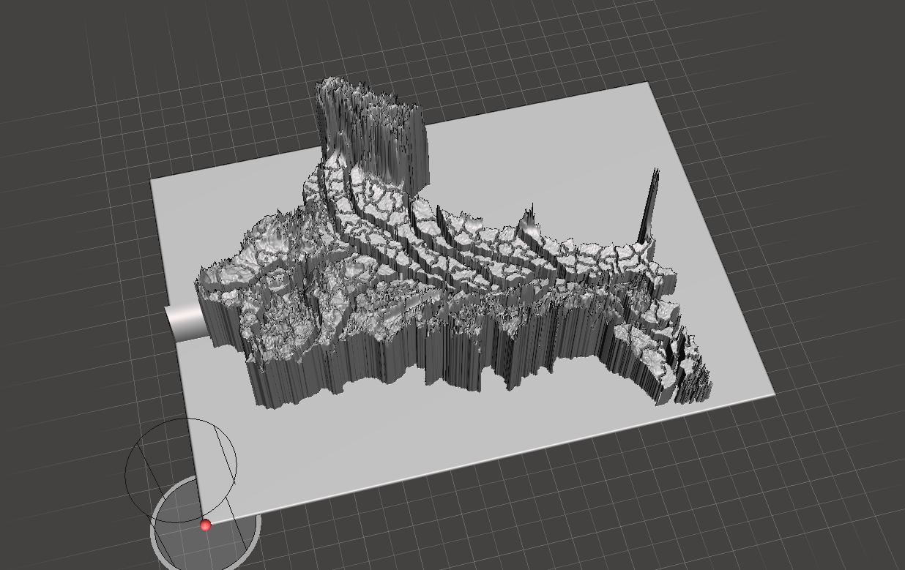
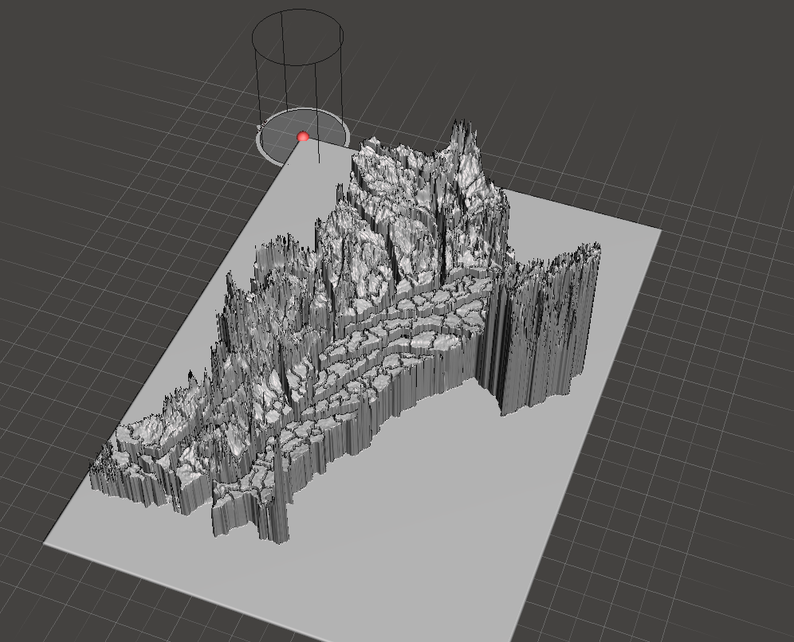
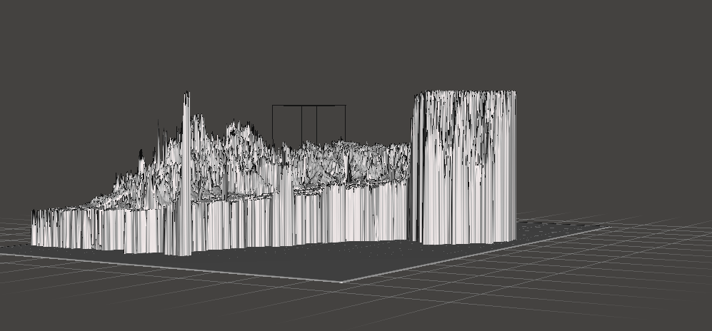
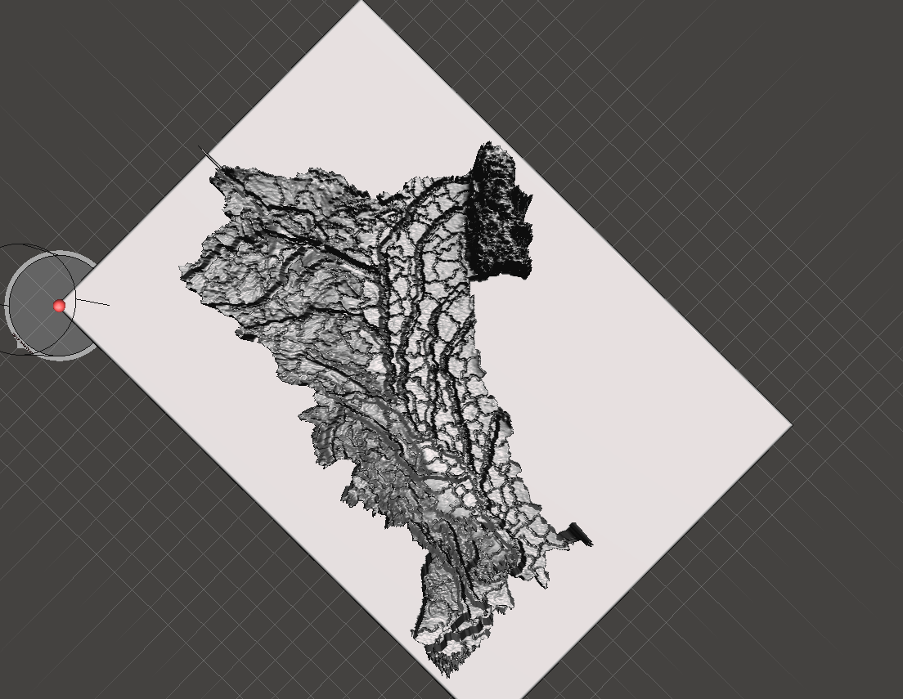
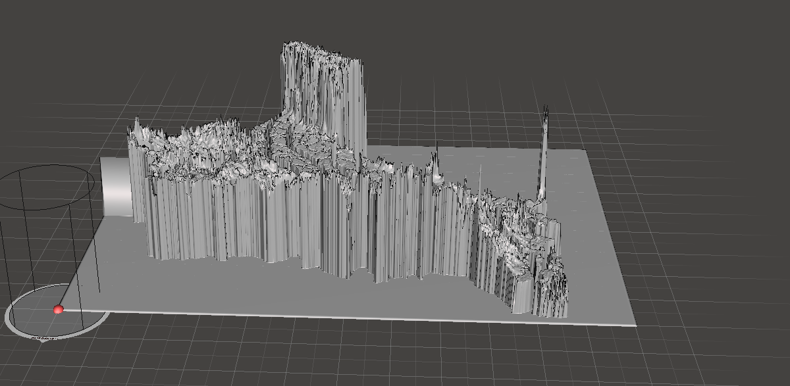

Ganga Basin Model
Live basin model · Ganga Research Laboratory, IIT (BHU) Varanasi
About the Ganga Basin
The Ganga (Ganges) is one of the most significant river systems in the world, holding immense cultural, spiritual, and ecological importance for India. Originating from the Gangotri Glacier in the Garhwal Himalayas, the river flows approximately 2,525 km before draining into the Bay of Bengal through the Sundarbans delta — one of the world's largest mangrove forests.
The basin drains an area of roughly 860,000 km² spanning multiple states and supports nearly 500 million people. It is the backbone of Indian agriculture on the Indo-Gangetic Plain and is central to India's flagship river-rejuvenation initiative, Namami Gange.
Basin Facts
| Origin | Gangotri Glacier, Uttarakhand |
| Length | ~2,525 km |
| Basin Area | ~860,000 km² |
| Outfall | Bay of Bengal (Sundarbans) |
| Population | ~500 million |
Major Tributaries
| Right bank | Yamuna, Chambal, Betwa, Son |
| Left bank | Ghaghra, Gandak, Kosi, Mahananda |
| States | Uttarakhand, UP, Bihar, Jharkhand, West Bengal |
| Countries | India, Nepal (upper tributaries) |
About the Model
This live physical model of the Ganga Basin is constructed on a logarithmic scale, providing a three-dimensional representation of the river network, sub-basins, major tributaries, and terrain of the entire Ganga basin. The logarithmic scale allows large topographic variations — from the high Himalayan headwaters to the flat Indo-Gangetic Plain — to be rendered in a single coherent model, making features visible across the full extent of the basin.
The model serves as a powerful educational and research tool, enabling students, researchers, and stakeholders to intuitively understand the spatial organisation of the basin, tributary junctions, flood plains, and the broader hydrological landscape.
| Scale type | Logarithmic Scale |
| Model type | Live Ganga Basin Model |
| River system | Full Ganga Basin (including major tributaries) |
| Location | Ganga Research Laboratory, IIT (BHU) Varanasi |
Team
Designer
Dr. Pramod Soni
Assistant Professor (Grade-I), Department of Civil Engineering, IIT (BHU) Varanasi
Printer / Fabricator
To be updated
Painter
To be updated
Photo Gallery




